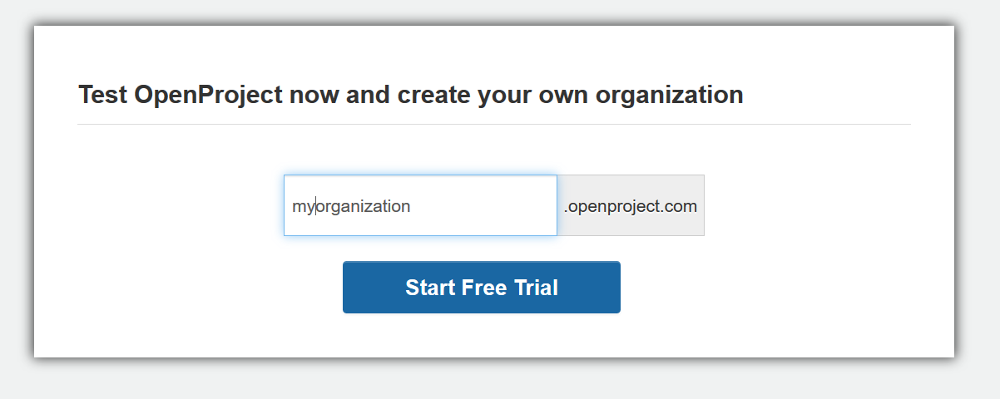

You can easily set up a 14 days free trial for the OpenProject Enterprise cloud edition.
Here you can test all OpenProject functionalities thoroughly. After 14 days the trial will expire automatically, there is no further action nor cancellation required from your side. So, you have all freedom to test OpenProject unconcernedly.
To create a new OpenProject trial either go to the OpenProject website or open the start trial page.
Enter your organization name. This name will become part of the URL of your OpenProject installation, for example myorganization.openproject.com.
You can include a hyphen “-“ in the organization name, e.g. my-new-organization.openproject.com.
Click the Start Free Trial button.

You will then be asked to create an OpenProject account.
Your OpenProject instance will be created and you will be directed to your OpenProject installation.
Due to data privacy reasons we automatically delete OpenProject trial environments a couple of weeks after they have expired. If your OpenProject trial is not accessible through the known URL, it has likely been deleted. You can easily create a new OpenProject trial environment. Simply enter your organization name (you can use the same name as before) and click on “Start Free Trial”. In order to avoid that your data is getting deleted, please select a plan during your trial duration or shortly after your OpenProject trial environment has expired.